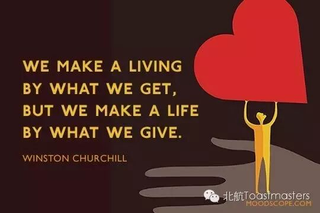
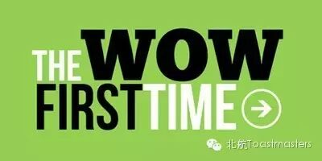
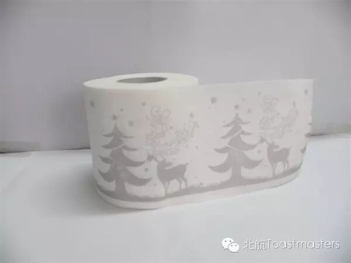
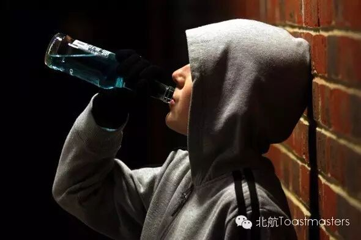

Attention!!!
We change time and room this week! Only this week!
Importantly! Welcome Ameco Excellent Club!!!
Time: 15:00-17:00,Saturday,April 9,
Venue: Room G849, New Main Building, Beihang University
To Make A Living

Toastmaster Bowen (Beihang)
We faced competition of examination when we studied in senior high school, we face academic challenges and technical problems in university now, and we are going to face more unkown obstacles coming from social life and work. So Toastmasters who work in AEC and those who learn in Beihang will exchange their opinions. I think you can benefit a lot from the ways they make a living, or a life.
Table Topic Master Daniel (AEC)
Have you ever tried amazing table topic speech? Please come to our meeting and step onto the stage to answer a question randomly in front of the audience. You can even select a male or female partner to deal with it together! Handsome president of AEC Daniel has prepared several valuable questions for you.
Competent Communication Projects (CC)

First Time (CC-1)
Speaker: Lucas (AEC)
First time is precious for everyone, especially in Toastmasters' stages. The first time to be a timer, the first time to count Ar-s for speakers, the first time to evaluate, impressively the first time to make a speech. So let's listen to Lucas'
first-time stories respectfully.
Fleet of Time (CC-2)
Speaker: Rachel (AEC)
In that fleeing year, we kept making delays after countless words of goodbye had passed our lips, which was sadly true that love is measured by complicated hearts. In that fleeing year, we made a hasty promise, so heavy that it could only be fulfilled by someone else. Rachel has something about that fleeing time to tell you with her rhythm of youth.

When Cloth Gets Replaced By Tissue (CC-7)
Speaker: Kiki (Beihang)
As an environmental scientific bachelor, Kiki try to depict a common phenomenon nowadays using contrast of usage of cloth and tissue. Facing rapidly increasing environmental problems, we can certainly do something to contribute our little power to this world we need to survive in. Please go with Kiki, to feel her feelings.

The Entertaining Speaker
Drunk Boy (AC-4)
Speaker: Keven, CC&CL (Beihang)
Too many stories accompany him, including feverish and exciting ones, informing and havestable ones, but this time Keven, as an advanced entertaining speaker, will bring us another funny one. Prepare your ears and heart, look at and follow this drunk boy!
What is Toastmasters?
Toastmasters International (TI) is a nonprofit educational organization that operates clubs worldwide for thepurpose of helping members improve their communication, public speaking, andleadership skills.
You can find us by the following map of Beihang University.
Any questions call Bowen:17801098588

https://mp.weixin.qq.com/s/B9pGFHjiQGG6co6a_sSFHg
本页为抢救式本地归档，图文已永久保存。